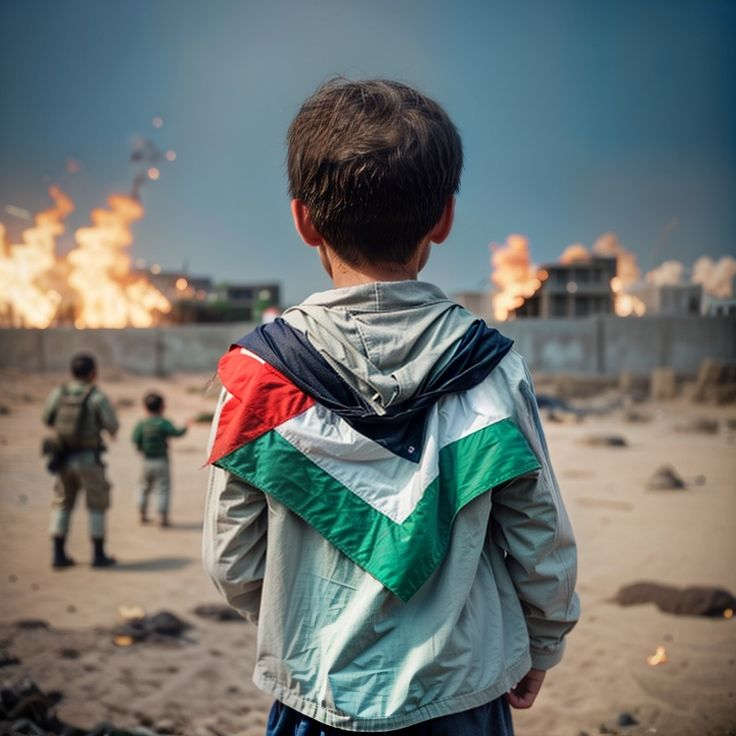

Since 7 October 2023, Gaza has suffered catastrophic loss of life and widespread destruction. Official counts reported in news and health-sector summaries document tens of thousands of deaths and hundreds of thousands of casualties across the enclave since the start of the offensive. These figures reflect mass civilian suffering across all age groups and a breakdown of victims that shows the particularly heavy toll on children, women, medical staff and other civilian professions.

64,232 and the number of injured was 161,583. Human casualties: by the time of the Al-Jazeera tally (September 5–6, 2025) the recorded number of killed (martyrs) was Among the dead were 19,424 children (≈30.2% of the total) and 10,138 women (≈15.8%); the counts also include thousands of elderly victims and many members of vital civilian services — for example reported losses among medical staff, civil-defense teams and journalists. These numbers are regularly updated by Palestinian health and government information offices and are cited in reporting by major outlets.
Missing, families erased and displacement: the same reporting indicates roughly 9,500 people remain listed as missing (likely buried under rubble or otherwise unreachable), and the humanitarian impacts include the disintegration of many family units — with thousands of households either entirely wiped out or left with a single surviving relative. The conflict has produced mass displacement and long-term trauma for hundreds of thousands of civilians across Gaza.
Infrastructure and material losses: the physical destruction has been immense. Estimates cited by government and media sources put direct losses in the tens of billions of dollars: total preliminary direct losses were estimated at more than USD 68 billion. Specific sectoral damage reported includes destruction or disabling of dozens of hospitals and health facilities (e.g., 38 hospitals and 96 primary health centres reported damaged or out of service), thousands of ambulances and rescue vehicles lost, and the near-total destruction of large portions of housing (hundreds of thousands of housing units wholly or partially destroyed), and severe damage to educational institutions (hundreds of schools and universities destroyed or damaged). The health sector losses alone were estimated at around USD 5 billion, education about USD 3.5 billion, and housing losses on the order of USD 27 billion (all figures provisional).